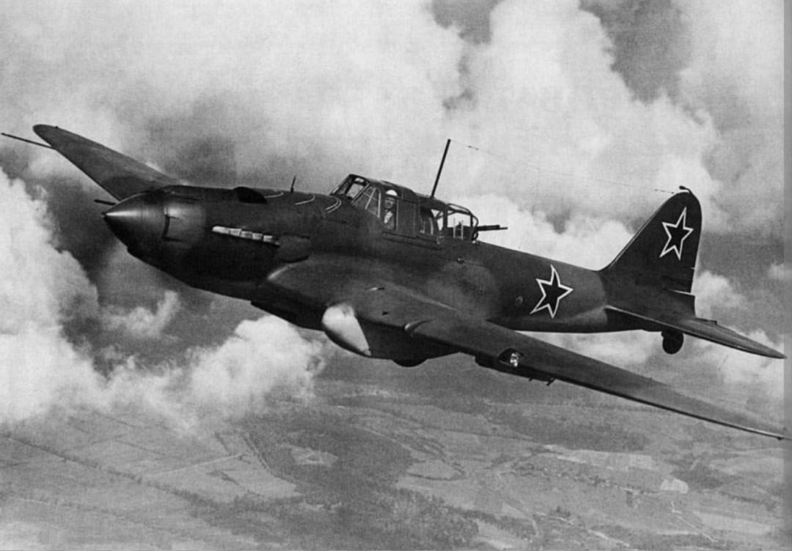
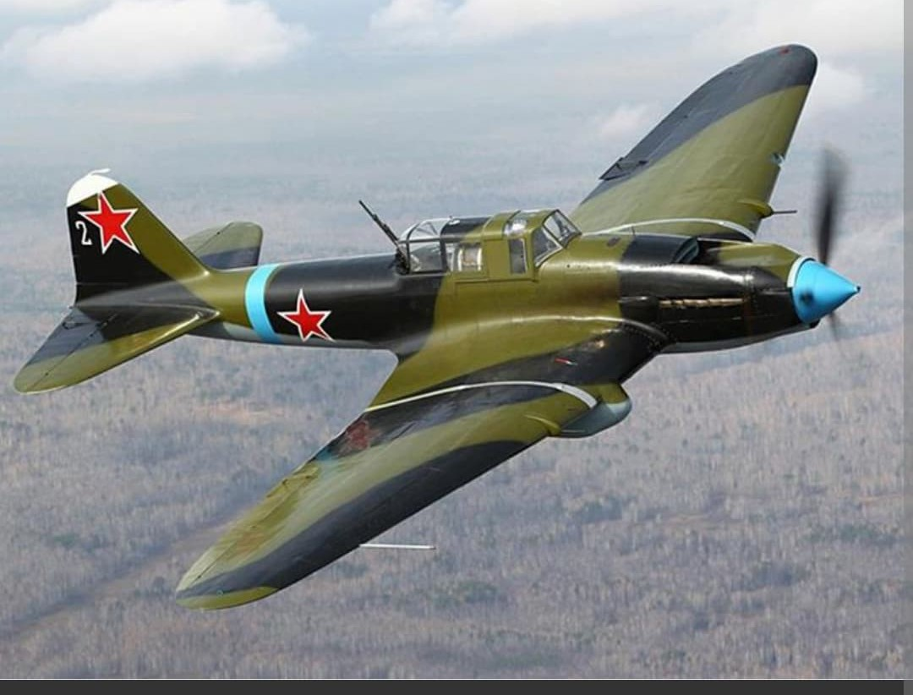
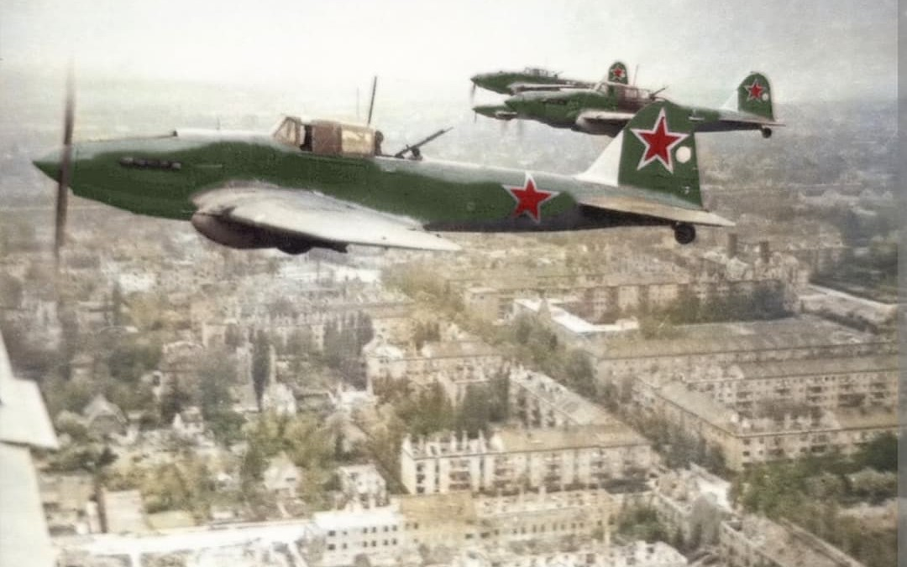

L'avion d'attaque au sol le plus produit de l'histoire militaire et le cauchemar des blindés allemands

L’Ilyushin Il-2 Sturmovik est un avion d'attaque au sol biplace conçu par le bureau d'études dirigé par Sergueï Ilyouchine. Véritable icône de la Grande Guerre patriotique, il est l'appareil militaire le plus produit de toute l'histoire de l'aviation, avec plus de 36 000 exemplaires sortis des usines soviétiques.
Surnommé « le char volant » par les troupes soviétiques ou « la mort noire » par les soldats de la Wehrmacht, l'Il-2 a révolutionné la doctrine du soutien tactique rapproché grâce à son blindage révolutionnaire intégré à la structure même de la cellule.
Spécifications de référence de l'Ilyushin Il-2m3 (version biplace de série la plus produite) :

L'innovation majeure de Sergueï Ilyouchine résidait dans l'intégration du blindage : contrairement aux avions traditionnels où le blindage est rajouté autour de l'équipage, sur l'Il-2, la coque en acier blindé faisait office de structure porteuse.

L'Il-2 a trouvé sa pleine mesure tactique lors des grandes batailles du front de l'Est, notamment à Koursk. Volant en rase-mottes, les Sturmoviks fondaient sur les colonnes ennemies. L'introduction des petites bombes antichar cumulatives PTAB permit à un seul Il-2 de neutraliser plusieurs chars en un seul passage.
Page du Musée HOP WW2 – Ilyushin Il-2 Sturmovik